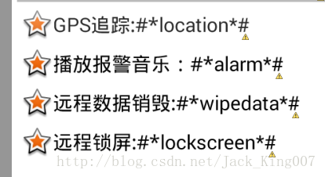

快速开发05之不做重复的事情——样式一样快速复制
先看一个布局，有时候 一样的样式多了 就不用重复的敲了

以上四个样式是一样的
我们再看看源码
<TextView
style="@style/text_content_style"
android:drawableLeft="@android:drawable/star_big_on"
android:text="GPS追踪:#*location*#" />
<TextView
style="@style/text_content_style"
android:drawableLeft="@android:drawable/star_big_on"
android:text="播放报警音乐：#*alarm*#" />
<TextView
style="@style/text_content_style"
android:drawableLeft="@android:drawable/star_big_on"
android:text="远程数据销毁:#*wipedata*#" />
<TextView
style="@style/text_content_style"
android:drawableLeft="@android:drawable/star_big_on"
android:text="远程锁屏:#*lockscreen*#" />可以看到其中加入一个属性style 把样式放入style.xml中就可以快速复制 调用 下来看看 源码
<style name="text_content_style">
<item name="android:gravity">center_vertical</item>
<item name="android:layout_marginTop">8dip</item>
<item name="android:layout_marginLeft">10dip</item>
<item name="android:textSize">20sp</item>
<item name="android:textColor">#000000</item>
<item name="android:layout_width">wrap_content</item>
<item name="android:layout_height">wrap_content</item>
</style>其中drawableLeft、drawableRight和drawableTop是一个常用、好用的属性，可以在文本的上下左右放置一个图片，而不使用更加复杂布局就能达到，好啦 相信看了这一章 你的开发速度又会快了很多